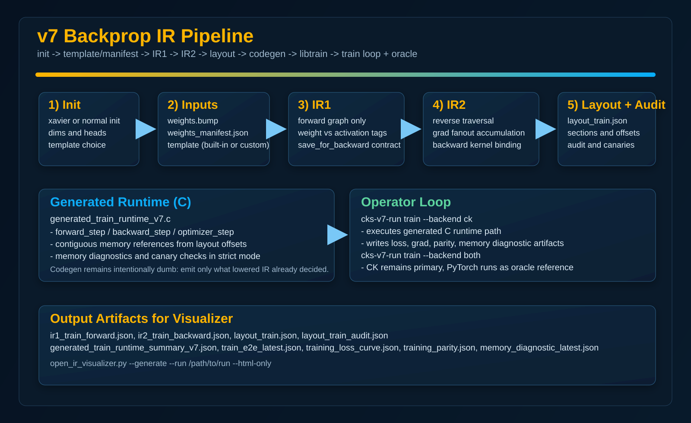
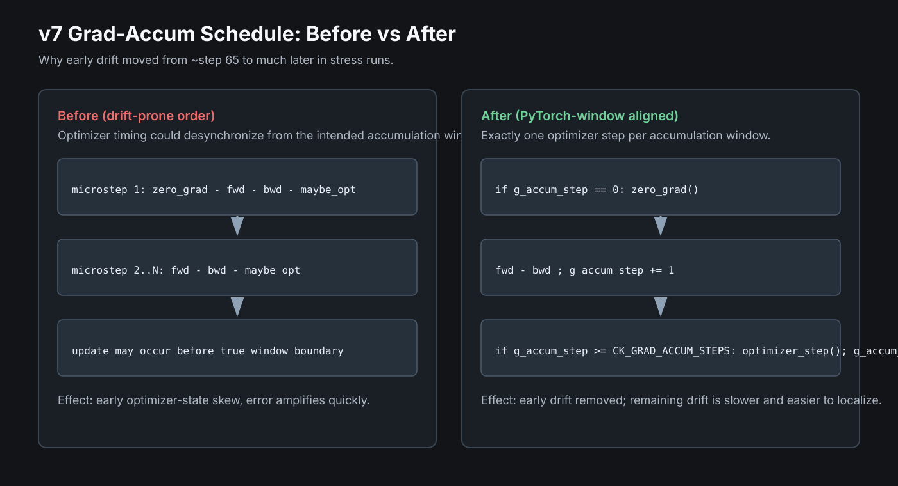
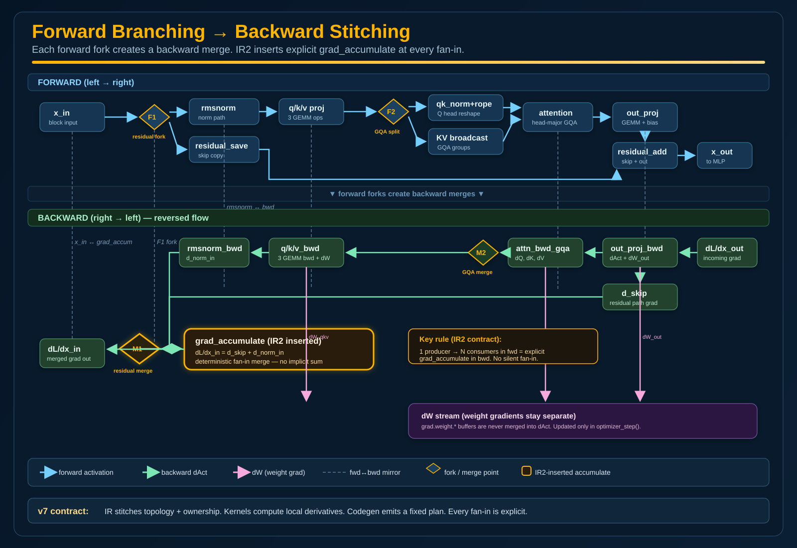
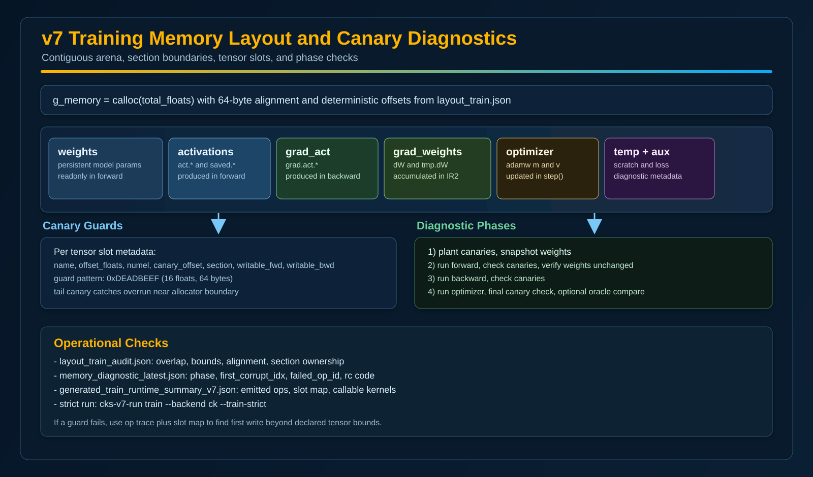

v7 Backprop IR Pipeline (Operator Guide)
This page explains how v7 training works end to end, with a focus on what is generated from IR, what is layout/codegen output, where logic lives, and how to debug correctness quickly.
There is no
ck_run_v7.c. The operator entrypoint is version/v7/scripts/ck_run_v7.py (and wrapper version/v7/scripts/cks-v7-run). It orchestrates generation and execution of generated C runtimes.

What Runs in C vs Python
| Layer | Primary Runtime | Why It Exists | Current Operator Command |
|---|---|---|---|
| Orchestration and run management | Python | Build artifacts, launch gates, collect reports, drive strict checks | cks-v7-run init|train|sanity|parity|profile |
| Forward and backward kernel math | C kernels | Deterministic numeric core, SIMD paths, parity-tested primitives | make test, make v7-gate-train |
| Generated training runtime | C (generated) | Dumb emitter executes IR-lowered plan and memory offsets | generated_train_runtime_v7.c, libtrain.so |
| Oracle parity and drift localization | Python + PyTorch | Reference implementation for step-level and slot-level checks | --backend both, --parity-on |
| IR report rendering | Python + HTML/JS | Load run artifacts and present explainable diagnostics | open_ir_visualizer.py --generate --run ... |
Mental Model: What Is Smart and What Is Dumb
Smart Stages
- Template selection: architecture op sequence and flags
- IR1: forward op graph with typed tensors and kernel IDs
- IR2: backward synthesis, fanout accumulation, grad edges
- Layout generation: contiguous offsets, sections, canary map
- Validation: invariants, memory audit, parity, drift checks
Dumb Stage
- Codegen only emits what lowered IR and layout already decided
- No architecture guessing in emitter
- No hidden model-family conditionals in runtime glue
- If behavior is wrong, root cause is usually upstream in IR/lowering/layout
From Init to Train
- Initialize run: choose init policy, dimensions, dtype policy, and template.
- Emit weights: write
weights.bumpandweights_manifest.json. - Build IR1: forward graph and typed tensor registry.
- Lower IR2: backward graph from IR1 + grad rules, with explicit accumulations.
- Generate layout: contiguous memory map with sections and canary ranges.
- Codegen runtime: emit train runtime C and compile to
libtrain.so. - Execute train: run CK path, optional PyTorch oracle checks, write reports.
Why Drift Moved From ~Step 65 to ~Step 800
Yes, execution order changed in an important way. The generated train runtime now enforces accumulation-window semantics so optimizer updates only happen at the true boundary of CK_GRAD_ACCUM_STEPS micro-steps.

- Before: optimizer timing could drift relative to the intended accumulation window.
- Now: each window does
zero_gradonce, accumulates grads over micro-steps, then applies one optimizer step at boundary. - Impact: early drift signal (~step 65 in stress) was removed; remaining drift appears much later and is smaller.
Current Numeric Status
- Stress config (
Hello!, AdamW,lr=1e-3) can still show late parameter drift near ~800 steps in full-C mode. - Switching only loss backend to torch (
--ck-loss-backend torch) passes the same 1000-step stress run. - This points to remaining long-horizon cumulative error in C-loss + AdamW interaction, not the old early scheduling bug.
Schedule Pseudocode (Expected)
if g_accum_step == 0: zero_grad()
forward()
backward()
g_accum_step += 1
if g_accum_step >= CK_GRAD_ACCUM_STEPS:
optimizer_step()
g_accum_step = 0
Cross-Entropy Semantics
C cross-entropy now uses log-sum-exp style loss accumulation to match PyTorch semantics and avoid probability-clamp artifacts. This tightened early parity, but long-horizon stress still needs final numeric tightening before claiming full production readiness for long custom pretraining runs.
Production Readiness Guidance
For current work, treat v7 training as good for controlled experiments and parity-driven bring-up. For long from-scratch production training, keep oracle checks enabled and use the realistic long-horizon gate as the blocker until the remaining late drift is eliminated.
Template Flexibility
You can use built-ins (qwen3, qwen2, gemma3) or a custom template file. If a template op has kernel coverage and bindings, it can be stitched automatically.
# Built-in version/v7/scripts/cks-v7-run init \ --run /tmp/v7_exp1 \ --template qwen3 \ --init xavier_uniform \ --generate-ir --generate-runtime --strict # Custom template version/v7/scripts/cks-v7-run init \ --run /tmp/v7_exp_custom \ --template my_arch \ --template-file /absolute/path/to/my_template.json \ --init xavier_uniform \ --generate-ir --generate-runtime --strict
IR1, IR2, Layout, Codegen Responsibilities
| Stage | Input | Output | Core Responsibility |
|---|---|---|---|
| IR1 (train-forward) | template + manifest + kernel registry + grad rules | ir1_train_forward.json |
Build forward graph, classify weight vs activation tensors, attach save-for-backward contract |
| IR2 (backward) | IR1 + grad rules + bindings | ir2_train_backward.json |
Synthesize backward ops, add gradient fanout accumulation, preserve producer-consumer chain |
| Layout + Audit (memory-lowered) | IR2 + manifest | layout_train.json, layout_train_audit.json |
Finalize contiguous offsets, section ownership, canary layout, bounds/overlap validation |
| Codegen | IR2 + layout | generated_train_runtime_v7.c, generated_train_runtime_summary_v7.json |
Emit deterministic C calls and memory references only |
Why Train Builder Is Separate From Inference Builder (For Now)
- Inference IR is decode/prefill-oriented and optimized around quantized runtime contracts.
- Training IR adds backward-only semantics: grad fanout merges, loss seed ops, optimizer state, clip/update boundaries.
- Training layout needs persistent regions inference does not own (
grad.weight.*,optimizer.m.*,optimizer.v.*). - Current policy: keep inference pipeline stable, iterate training pipeline quickly, then unify once parity + diagnostics are robust.
So today: inference uses build_ir_v7.py; training uses build_ir_train_v7.py + lower_ir2_backward_v7.py. Both share IR types and kernel registry contracts.
How Residual, GQA, and Splits Stitch Backward
The forward graph can branch. IR2 makes the reverse merge explicit by emitting accumulation ops where gradients meet.

Key Rule
If one forward tensor feeds multiple consumers, IR2 inserts explicit gradient accumulation in backward. This is where residual and attention branch merges stay correct.
Memory Layout and Canary Diagnostics
Training layout is contiguous and sectioned. Canary guards and runtime checks detect out-of-bounds writes and readonly violations.

| Section | Examples | Written In |
|---|---|---|
| weights | weight.layer.* |
optimizer step (not forward) |
| activations + saved | act.*, saved.* |
forward |
| grad_activations | grad.act.* |
backward |
| grad_weights | grad.weight.*, tmp.grad.weight.* |
backward |
| optimizer state | AdamW m, v |
optimizer step |
| temporaries + aux | scratch, loss buffers, diagnostics | multi-phase |
Runbook: End-to-End Commands
1) Initialize and generate IR/runtime
version/v7/scripts/cks-v7-run init \ --run /tmp/v7_exp1 \ --template qwen3 \ --init xavier_uniform \ --layers 2 --embed-dim 128 --hidden-dim 256 \ --num-heads 8 --num-kv-heads 4 \ --generate-ir --generate-runtime --strict
2) CK-only training (generated C runtime path)
version/v7/scripts/cks-v7-run train \ --run /tmp/v7_exp1 \ --backend ck \ --prompt "hello" \ --train-epochs 3 --train-seq-len 16 --train-total-tokens 1024 --train-grad-accum 8 \ --train-strict
3) CK + PyTorch oracle parity
version/v7/scripts/cks-v7-run train \ --run /tmp/v7_exp1 \ --backend both \ --prompt "hello" \ --train-epochs 1 --train-seq-len 16 --train-total-tokens 1024 --train-grad-accum 8 \ --parity-on --parity-profile balanced --dump-on-drift --drift-topk 8
4) Generate visual report from run directory
python3 version/v7/tools/open_ir_visualizer.py \ --generate --run /tmp/v7_exp1 --html-only
Open /tmp/v7_exp1/ir_report.html.
Verification Matrix: Epoch 1 to 10 + Checkpoints + Oracle
.venv/bin/python for strict PyTorch snapshot oracleIf you use system
python3 without torch, training falls back to tiny reference telemetry instead of strict slot-level snapshot checks.
# 0) init .venv/bin/python version/v7/scripts/ck_run_v7.py init \ --run /tmp/v7_oracle_10ep \ --init xavier_uniform \ --layers 2 --vocab-size 256 --embed-dim 128 --hidden-dim 256 \ --num-heads 8 --num-kv-heads 4 --context-len 128 \ --generate-ir --generate-runtime --strict # 1) epoch-1 strict oracle (every step) + replay + periodic checkpoints .venv/bin/python version/v7/scripts/ck_run_v7.py train \ --run /tmp/v7_oracle_10ep \ --backend ck \ --train-epochs 1 --train-seq-len 8 --train-total-tokens 64 --train-grad-accum 2 \ --train-vocab 256 --train-d-model 64 --train-hidden 128 \ --parity-on --oracle pytorch --parity-profile debug --parity-every 1 \ --parity-replay-on-check --train-save-every 4 # 2) epoch-10 sweep strict oracle + replay + checkpoint cadence .venv/bin/python version/v7/scripts/ck_run_v7.py train \ --run /tmp/v7_oracle_10ep \ --backend ck \ --train-epochs 10 --train-seq-len 8 --train-total-tokens 64 --train-grad-accum 2 \ --train-vocab 256 --train-d-model 64 --train-hidden 128 \ --parity-on --oracle pytorch --parity-profile balanced --parity-every 1 \ --parity-replay-on-check --train-save-every 20 # 3) memory verification suite (canary toggle + fault injection + ASan agreement) .venv/bin/python version/v7/scripts/ck_run_v7.py train \ --run /tmp/v7_oracle_10ep \ --backend ck \ --train-epochs 1 --train-seq-len 8 --train-total-tokens 64 --train-grad-accum 2 \ --train-vocab 256 --train-d-model 64 --train-hidden 128 \ --train-verify-memory --train-verify-steps 4
| Artifact | Expected | Location |
|---|---|---|
| train summary | pass_parity: true, strict oracle source + replay checks |
/tmp/v7_oracle_10ep/train_e2e_latest.json |
| checkpoints | weights_step_*.bump + per-step manifest |
/tmp/v7_oracle_10ep/checkpoints/ |
| memory verification | ok: true (toggle diff, intentional +1 catch, ASan agreement, bounds) |
/tmp/v7_oracle_10ep/memory_verification_latest.json |
| viewer report | training tabs populated from run-dir artifacts | /tmp/v7_oracle_10ep/ir_report.html |
PR4.5 Throughput Track
- Add explicit threaded GEMM dispatch for v7 training runtime (not serial-only blocked calls).
- Compile runtime with consistent parallel flags and deterministic thread control.
- Prepack/plan GEMM weight access to reduce cache misses.
- Reduce backward buffer traffic hotspots (
grad_accumulate,memset,memmove). - Keep strict parity tolerances unchanged while optimizing.
Performance Workflow (After Parity Is Green)
- Run CK baseline without oracle:
--backend ck --parity-on=false. - Run reference harness timing:
--backend both(captures CK vs torch step metrics). - Use
make profile-v7-fullormake v7-perf-gatefor perf + flamegraph artifacts. - Use VTune for microarchitecture + memory bottlenecks (
hotspots,uarch-exploration,memory-access). - Use ASan for bounds/UB; use Valgrind when you need slower but deeper leak/use-after-free analysis.
Threading Sanity
Before optimization work, confirm CK runtime is saturating cores and not running in an accidental single-thread path. Use train step timing plus profiler traces to validate threadpool/OpenMP utilization, then optimize kernel hotspots (usually GEMM backward and attention backward first).
How You Know It Is Actually Training
train_e2e_latest.jsonshows loss curve with decreasing trendtraining_loss_curve.jsonandtraining_grad_norms.jsonare populatedtraining_parity.jsonreports PASS for oracle checkpoints (when enabled)layout_train_audit.jsonand memory diagnostics show no bounds/overlap/canary failures- Generated runtime summary includes expected forward/backward/optimizer kernel calls
Debug Fast: First-Divergence and Memory Safety
| Symptom | First Artifact | Likely Root |
|---|---|---|
| Parity drift appears after a few steps | drift_report.json |
Specific op mismatch, accumulation edge, or dimension binding issue |
| Crash or invalid pointer in CK backend | memory_diagnostic_latest.json |
Out-of-bounds write, incorrect slot size/offset, or bad kernel args |
| Layout audit fails | layout_train_audit.json |
Overlap, section bounds error, alignment or ownership mismatch |
| Generated runtime compiles but output is unstable | generated_train_runtime_summary_v7.json |
Wrong kernel binding or call-order mismatch from upstream IR |
What Changes for Backprop vs Inference
- Inference complexity is dominated by quantized weight paths and decode-time KV behavior.
- Backprop complexity is dominated by memory pressure and graph bookkeeping: saved activations, gradient routing, accumulation, optimizer state.
- Training usually runs float paths (fp32/bf16 policy) rather than quantized weight formats.
- Keeping training pipeline partially separated while contracts stabilize is a pragmatic step, not architectural drift.
Artifact Checklist in a Healthy Run Directory
/tmp/v7_exp1/ weights.bump weights_manifest.json ir1_train_forward.json ir2_train_backward.json ir_train_invariants.json layout_train.json layout_train_audit.json generated_train_runtime_v7.c generated_train_runtime_summary_v7.json libtrain.so train_e2e_latest.json training_loss_curve.json training_grad_norms.json training_parity.json memory_diagnostic_latest.json ir_report.html
Use this page as the operator baseline: if these artifacts line up and the gates pass, your v7 backprop pipeline is stitched correctly.